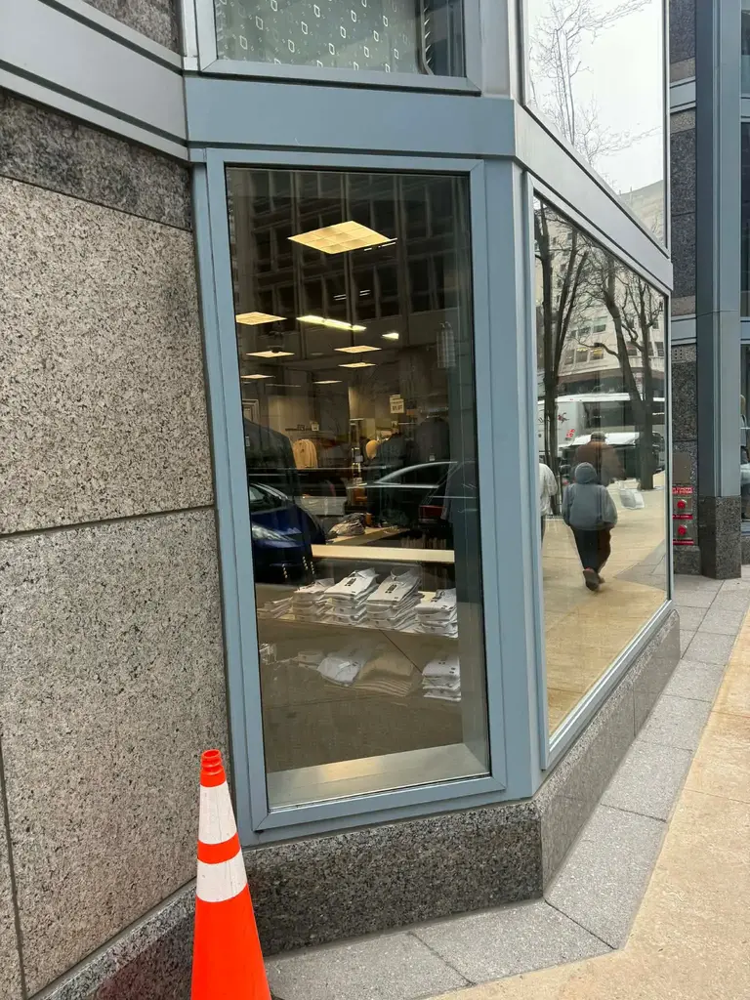
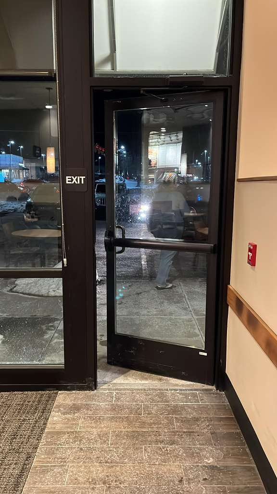

Storefront Glass
Repair and replacement of tempered and laminated storefront glass for retail stores, restaurants, and commercial storefronts in DC.
Capital Glass Door provides commercial glass repair for businesses, property managers, and building owners across Washington DC and the DMV area. Call to discuss storefront glass, office glazing, entrance glass, commercial windows, access conditions, and emergency or scheduled service.
Commercial glass repair requires understanding of building codes, glass safety standards, and the unique needs of business properties. We provide comprehensive commercial glass repair services including:
Repair and replacement of tempered and laminated storefront glass for retail stores, restaurants, and commercial storefronts in DC.
Interior and exterior glass repair for office buildings, including window panels, glass partitions, and entrance systems.
24/7 emergency glass repair and board-up service to secure your commercial property when glass breaks.
Examples of our commercial glass repair work across Washington DC and the DMV region:




When an opening is unsecured, we prioritize safety and security first. Our 24/7 emergency teams serve the entire Washington DC metro area. After emergency board-up, we coordinate replacement glass and schedule professional installation to restore your building's operations.
Commercial glass emergency? Call 703-244-0559. For details, see our Emergency Glass Repair page.
Our commercial glass repair services support a wide range of business types across Washington DC and the DMV:
Call to confirm service coverage and the appropriate commercial glass or door service for the property.
Call for emergency commercial glass repair or call for scheduled service in Washington DC & DMV.
703-244-0559